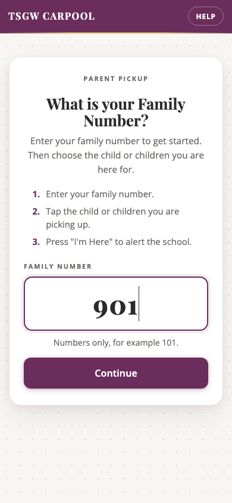
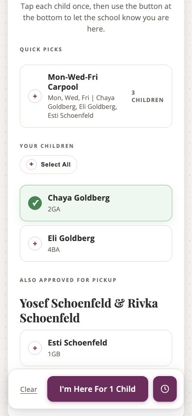
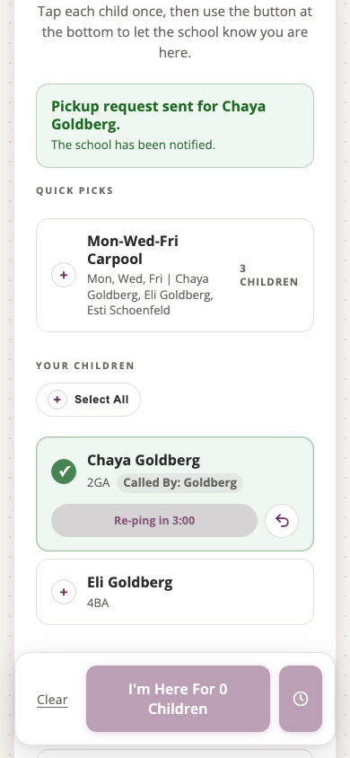

When parents check in before they reach the front of the car line, the school gets advance notice about which children should get ready. That gives teachers and staff time to start moving students toward dismissal before the car is waiting at the pickup point.
This helps the line keep moving. Instead of each car waiting while names are gathered and children are called one at a time, the system gives everyone a clearer signal earlier in the process. The goal is a smoother pickup with less waiting for parents, students, and staff.
Clear permissions and security
The system is designed to show only the children a family is allowed to pick up. Parents can always see their own children, but another family's child only appears when that child's parent has granted pickup permission.
This keeps dismissal organized and safe. Staff do not have to rely on memory, verbal requests, or last-minute confusion in the car line. If another family is helping with pickup, the permission should be set ahead of time so the system can clearly show that the pickup is approved.
Clear logs and records
The system keeps a clear history of pickup activity, including which family checked in and which students were requested. That record gives the school a reliable way to review what happened during dismissal instead of depending only on memory or handwritten notes.
This is important for safety. If a question comes up later, staff can look back at the pickup history and understand who was involved, when the request was made, and which students were included. Clear records help the school stay organized, respond to concerns, and keep dismissal accountable.
How it works
Parents use their Family Number to tell the school who they are here to pick up. The classroom display updates right away, using only students connected to that family or already approved for pickup.
1
Sign in on the parent page
Open the pickup website and enter your Family Number. No app or password is needed.

2
Choose who you are picking up
Tap each child you are taking. The button at the bottom shows how many children are selected.

3
Tap I'm Here
The parent page confirms that the pickup request was sent and shows the child as already called.

4
The classroom display lights up
The selected student appears on the classroom screen, and the student card turns green so staff can send the child out.